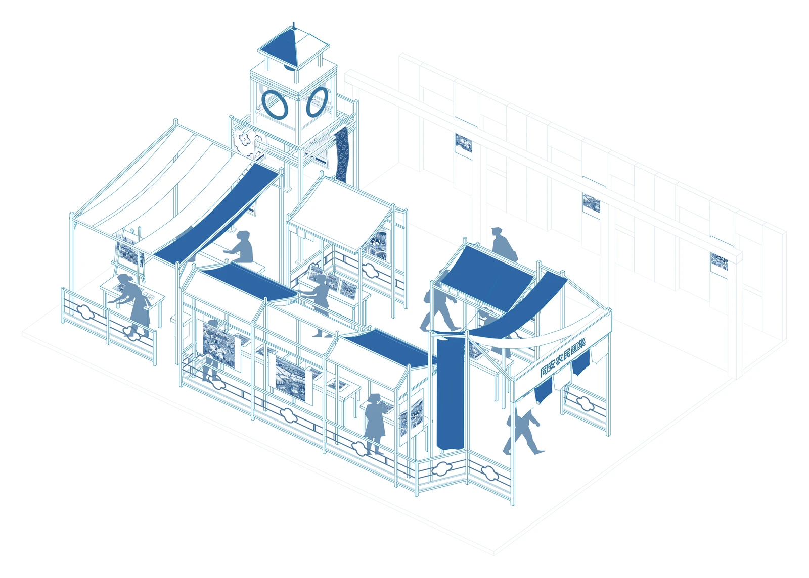
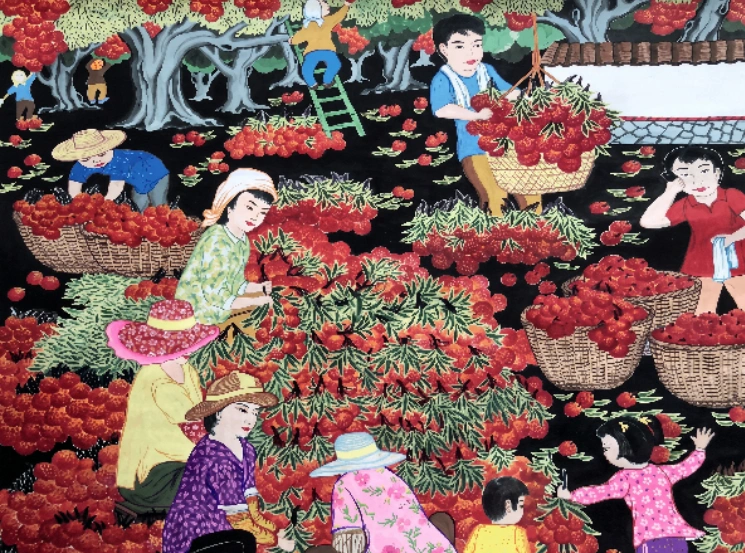
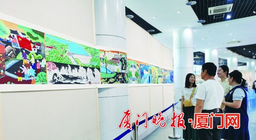

工坊序言画家带来故事，
画家带来故事，
我们铺开画桌。
在同安老城，画家带来原作，设计师推敲构图，手艺人试做样件。院里的第一张桌子，留给愿意坐下来一起画的人。

在同安老城，画家带来原作，设计师推敲构图，手艺人试做样件。院里的第一张桌子，留给愿意坐下来一起画的人。
画家带来采果的故事，设计师沿着树冠、果筐和人物读画。试着让颜色从左到右经过画纸，看同一抹红如何串起这三个动作。

‹ ›农民画，画的是身边的日子。
也是人们眼里，热腾腾的世界。
一场丰收、一桌团圆饭、一条熟悉的街巷。农民画把劳动、节庆和邻里关系画进鲜明的色彩里。大胆的造型、饱满的构图，让平凡的片段有了自己的生命。
我们想做的，是把画重新带回人与人之间。让画家、设计师、手艺人与居民共用一张桌子，从分享故事开始，试着一起创造。
去看画里的生活 ↗让桃红、湖蓝和明黄相遇，用颜色讲心情。
夸张一条鱼，放大一朵花，画出独有的观察。
把劳动、相聚和日常的细节连成一个故事。
从乡土生活中生长，
在新的相遇里继续。

同安百名本土画家把一百个故事接成一幅百米长卷。在展厅里，观众要沿着墙面走，才能读完整幅画。我们把这个观看动作借到了桌面上：打开一扇，再打开一扇，让故事在折屏上接下去。
读厦门网的现场报道 ↗选一种颜色，点击画纸盖印。
不用想太多，试一朵就知道。